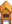

User:Wikonimo
Jump to navigation
Jump to search
Bee House Flower Priority
This shows the order that bee houses check their neighbouring tiles for flowers. The lowest numbered tile that contains a flower gives the type of honey that will be produced. (Utility::findCloseFlower)
| 60 | ||||||||||
| 49 | 40 | 58 | ||||||||
| 47 | 31 | 24 | 38 | 56 | ||||||
| 45 | 29 | 17 | 12 | 22 | 36 | 54 | ||||
| 43 | 27 | 15 | 7 | 4 | 10 | 20 | 34 | 52 | ||
| 41 | 25 | 13 | 5 | 1 |  | 2 | 8 | 18 | 32 | 50 |
| 42 | 26 | 14 | 6 | 3 | 9 | 19 | 33 | 51 | ||
| 44 | 28 | 16 | 11 | 21 | 35 | 53 | ||||
| 46 | 30 | 23 | 37 | 55 | ||||||
| 48 | 39 | 57 | ||||||||
| 59 |
Wheel Spin Outcomes
This shows the outcome for each of the 30 possible initial states.
| Game1.random.Next(0, 15) | Game1.random.NextBool | Initial arrowRotationVelocity | Final arrowRotation | Colour |
|---|---|---|---|---|
| 0 | False | 0.19634954084936207 | 5.448778298386145 | Green |
| 0 | True | 0.2454369260617026 | 3.831957639216166 | Orange |
| 1 | False | 0.2086213871524472 | 3.114182257687237 | Orange |
| 1 | True | 0.25770877236478773 | 2.4561364064845574 | Orange |
| 2 | False | 0.22089323345553233 | 1.0194075461817296 | Green |
| 2 | True | 0.2699806186678728 | 1.3200579631299112 | Green |
| 3 | False | 0.23316507975861744 | 5.447384216646114 | Green |
| 3 | True | 0.28225246497095796 | 0.42362413438191227 | Green |
| 4 | False | 0.2454369260617026 | 3.831957639216166 | Orange |
| 4 | True | 0.2945243112740431 | 6.050079132282405 | Green |
| 5 | False | 0.25770877236478773 | 2.4561364064845574 | Orange |
| 5 | True | 0.30679615757712825 | 5.633032707518103 | Green |
| 6 | False | 0.2699806186678728 | 1.3200579631299112 | Green |
| 6 | True | 0.31906800388021334 | 5.455650532314506 | Green |
| 7 | False | 0.28225246497095796 | 0.42362413438191227 | Green |
| 7 | True | 0.3313398501832985 | 5.5179915115338956 | Green |
| 8 | False | 0.2945243112740431 | 6.050079132282405 | Green |
| 8 | True | 0.3436116964863836 | 5.8199574704058605 | Green |
| 9 | False | 0.30679615757712825 | 5.633032707518103 | Green |
| 9 | True | 0.35588354278946877 | 0.07850054642936713 | Green |
| 10 | False | 0.3190680038802134 | 5.455650532314533 | Green |
| 10 | True | 0.3681553890925539 | 0.8598146393768435 | Green |
| 11 | False | 0.3313398501832985 | 5.5179915115338956 | Green |
| 11 | True | 0.380427235395639 | 1.8809304265636122 | Orange |
| 12 | False | 0.3436116964863836 | 5.8199574704058605 | Green |
| 12 | True | 0.39269908169872414 | 3.141592653586608 | Orange |
| 13 | False | 0.35588354278946877 | 0.07850054642936713 | Green |
| 13 | True | 0.4049709280018093 | 4.6420958447571135 | Orange |
| 14 | False | 0.36815538909255385 | 0.8598146393768125 | Green |
| 14 | True | 0.41724277430489437 | 0.09896016858417953 | Green |